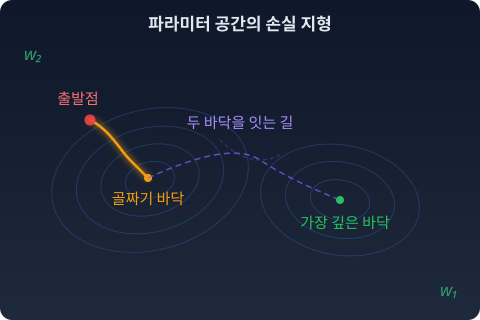
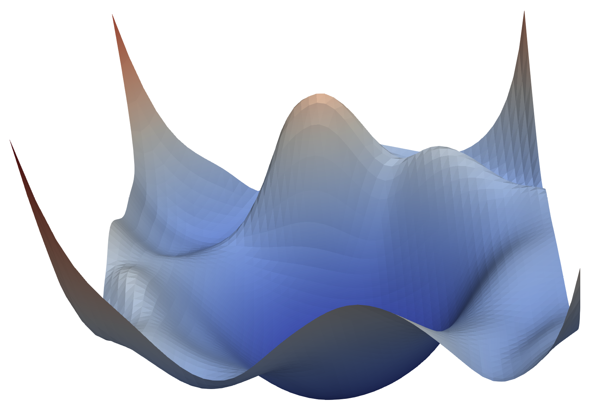
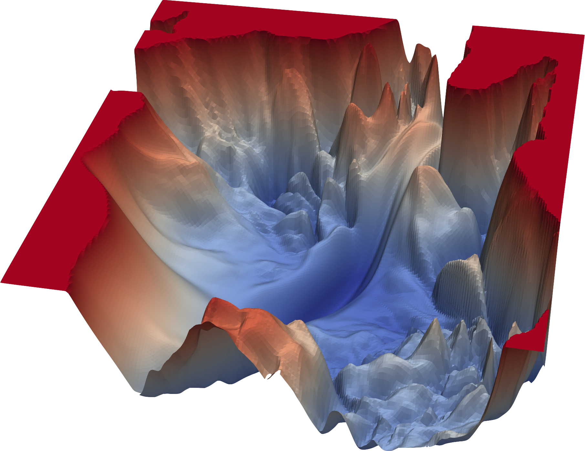

파라미터 공간에서 벌어지는 마법들
학습이 파라미터라는 빈칸을 채우는 일이라면, 학습하는 동안 모델은 무엇을 지나가고 있는 걸까? 빈칸 하나하나의 값이 바뀌는 것을 넘어, 모델 전체가 어딘가를 걷고 있다고 볼 수는 없을까?
파라미터가 10억 개인 모델이 있다고 하자. 파라미터 값을 한 벌 정하는 것은 10억 차원 공간에 점 하나를 찍는 것이다. 이 공간을 파라미터 공간이라 부른다. 모델 하나가 점 하나다.
이렇게 보면 익숙한 일들이 다르게 보인다.
초기화, 학습, 미세조정
학습을 시작할 때 파라미터를 무작위로 정한다. 파라미터 공간의 아무 점에서, 다만 너무 크지 않은 곳에서 출발한다는 뜻이다.
학습은 그 점을 옮기는 일이다. 데이터를 한 묶음 볼 때마다 손실이 줄어드는 쪽으로 한 걸음. 손실 함수는 파라미터 공간 위에 지형을 만들고, 학습은 그 지형을 따라 내려가는 걸음이다.

실제 신경망의 지형을 2차원 단면으로 잘라 그려 보면 이렇다.


그림: 리(Hao Li) 외, 「Visualizing the Loss Landscape of Neural Nets」(NeurIPS 2018)의 프로젝트 페이지. CIFAR-10 사진 분류로 학습한 56층 네트워크. 위는 지름길 연결이 있는 ResNet-56, 아래는 거기서 지름길 연결만 뺀 VGG-56.
같은 깊이의 네트워크인데, 지름길 연결(skip connection)이 있으면 지형이 매끈한 그릇이고 없으면 주름투성이다. 구조를 조금 바꿨을 뿐인데 걸어야 할 땅이 달라진다.
미세조정(fine-tuning)은 이미 학습된 점 근처에서 새 데이터를 보며 조금 더 움직이는 일이다. 처음부터 걷는 것이 아니라, 좋은 동네에 도착한 뒤 골목을 옮기는 것이다.
LoRA — 좁은 방향으로만 움직이기
LoRA(Low-Rank Adaptation, 가느다란 행렬 두 개로 변화를 적는 미세조정 방법)는 한 걸음 더 나간다. 큰 가중치 행렬 전체를 바꾸는 대신, 두 개의 가느다란 행렬의 곱으로 쓸 수 있는 변화만 허락한다. 메타가 2023년에 공개한 언어 모델 라마(LLaMA)의 70억 파라미터판에는 층마다 4096×4096 행렬이 들어 있다. 이 행렬 하나를 통째로 고치려면 1,677만 개의 숫자를 바꿔야 하지만, 가느다란 쪽의 길이(랭크)가 8인 두 행렬, 곧 4096×8 행렬과 8×4096 행렬만 학습하면 6만 5천여 개, 0.4% 정도로 충분하다. 랭크 8은 널리 쓰이는 LoRA 라이브러리(허깅페이스 PEFT)의 기본값이다.
거대한 공간에서 극히 일부의 방향으로만 움직이는데도 모델은 새 말투를 배우고, 새 화풍을 배운다. 변화가 사는 곳이 생각보다 좁다는 뜻이다.
사례 — 점을 섞는 사람들
이미지 생성 모델을 가지고 노는 사람들은 이상한 실험을 즐겨 한다.
같은 기본 모델에서 출발해 서로 다르게 미세조정한 두 모델이 있다. 두 파라미터를 반씩 섞는다. 파라미터 공간에서 두 점의 한가운데를 취하는 것이다. 그러면 종종 두 모델의 장점이 함께 살아 있는 모델이 나온다. 연구로도 보고되었다. 워츠먼(Mitchell Wortsman) 등은 2022년에, 같은 출발점에서 여러 번 미세조정한 사진 분류 모델의 가중치를 평균하면 가장 좋은 하나만 쓸 때보다 나은 경우가 많다는 것을 보였다. 문장을 분류하는 언어 모델(BERT, T5)에서도 폭은 작지만 나아지는 경우가 있었다. 모델 수프(model soup)라는 이름이 붙었다.
LoRA 두 개 사이를 걷는 실험도 있다. 스타일 A의 LoRA와 스타일 B의 LoRA를 비율을 바꿔 가며 섞는다. 사용자들 사이에 전해지는 경험으로는, 어떤 쌍은 A에서 B로 부드럽게 넘어가고 어떤 쌍은 중간에서 그림이 갑자기 무너진다.
서로 다른 무작위 초기값에서 따로 학습한 두 모델을 그대로 섞으면, 대개는 둘 다보다 훨씬 나쁜 모델이 나온다. 에인스워스(Samuel Ainsworth) 등이 2022년에 손글씨 숫자와 사진 분류 모델로 확인한 일이다.
같은 "가운데 취하기"인데 왜 어떤 때는 되고 어떤 때는 안 될까. 두 점 사이를 비율대로 섞어 잇는 일을 보간이라 한다. "잘 되는 보간"과 "안 되는 보간"을 가르는 것은 무엇일까.
수확
이 현상들은 제멋대로가 아니다. 패턴이 있다. 그 패턴이 무엇인지 묻는 것이 이 책의 출발점이다.
패턴을 읽으려면 파라미터 공간에서 "거리"와 "방향"을 재는 도구가 필요하다. 가장 쉬운 도구는 유클리드 자다. 파라미터 숫자들의 차이를 제곱해서 더하는 것. 그런데 이 자는 모델이 내놓는 분포가 얼마나 바뀌었는지 모른다. 후보가 둘인 모델에서, 마지막 층의 편향처럼 로짓에 그대로 더해지는 파라미터를 똑같이 0.1 움직여 보자. 두 후보의 로짓 차이가 0.1 늘어난다.
| 로짓 차이 | 확률표 | 0.1 늘린 뒤 | 첫 후보 확률의 변화 |
|---|---|---|---|
| 0 (고르게 퍼진 곳) | (0.500, 0.500) | (0.525, 0.475) | 0.025 |
| 5 (한쪽에 몰린 곳) | (0.9933, 0.0067) | (0.9939, 0.0061) | 0.0006 |
유클리드 자로는 두 걸음이 똑같이 0.1인데, 출력 분포는 한쪽에서 마흔 배쯤 더 크게 바뀌었다. 우리가 정말 신경 쓰는 것은 숫자가 아니라 모델이 내놓는 분포다. 유클리드 자로는 충분하지 않다.
문제 4. 확률을 옮기는 로짓 걸음
후보가 둘인 모델에서 첫 후보의 확률을 두 번 옮긴다. ① 0.5에서 0.6으로, ② 0.9에서 0.99로. (가) 두 후보의 로짓 차이를 각각 얼마나 바꿔야 하는가? (나) 확률의 변화(0.1과 0.09)로 보면 두 걸음은 비슷하고, 로짓의 변화로 보면 크게 다르다. 출력 분포가 실제로 더 크게 바뀐 쪽은 어느 쪽인가? 두 분포를 동전 100번 던지기로 가려내는 일로 생각해 보라.
함께 풀기

후보가 둘이면 첫 후보 확률이 q일 때 로짓 차이는 ln(q / (1 − q))예요. 0.5는 0, 0.6은 ln 1.5 ≈ 0.405. 0.9는 ln 9 ≈ 2.197, 0.99는 ln 99 ≈ 4.595라서 2.398. ②가 여섯 배쯤 커요.
(나)는 확률 차이로 보면 0.1 대 0.09니까 ①이 조금 더 크게 바뀐 거죠.

나는 로짓으로 보면 ②가 여섯 배라서 ②가 크다고 봐. 그런데 로짓도 이름표일 뿐이라 이것도 좀 찜찜해.

둘 다 이름표로 잰 값이에요. 이름표 없이 분포끼리 견줘 볼까요? 앞면 확률 0.5인 동전과 0.6인 동전을 100번씩 던지면 앞면이 몇 번쯤 나와요?
50번과 60번이요. 흔들림(표준편차)은 √(100 × 0.5 × 0.5) = 5와 √(100 × 0.6 × 0.4) ≈ 4.9라서, 두 평균이 표준편차 두 개쯤 떨어져 있어요. 한 번 던져 보고는 헷갈릴 때가 꽤 있겠네요.
0.9와 0.99는요?

뒷면으로 세면 10번과 1번이요. 흔들림은 √(100 × 0.9 × 0.1) = 3과 √(100 × 0.99 × 0.01) ≈ 1이라서… 표준편차 세 개쯤 떨어져 있어요. 확률 차이는 더 작은데 가려내기는 더 쉬워요.

0이나 1 근처에서 0.09 움직인 게 가운데에서 0.1 움직인 것보다 분포로는 더 큰 변화였어요. 틀릴 확률이 0.1에서 0.01로 열 배 줄었으니까요. 확률로 재느냐 로짓으로 재느냐에 따라 "같은 걸음"이 달라졌고, 둘 다 분포가 달라진 만큼을 그대로 재지는 못했어요.
그래요. 이름표에 기대지 않고 분포가 얼마나 달라졌는지 재는 자가 필요하다는 것, 그게 이 문제의 결론이에요. 그 자를 어떻게 만드는지는 이 책이 한참에 걸쳐 답해요.
시험 점수를 50점에서 60점으로 올리는 것보다 90점에서 99점으로 올리는 게 더 큰 일인 거랑 같네요. 남은 실수 열 개 가운데 아홉 개를 없앤 거니까요.
문제 5. 두 모델의 가운데 (킬러)
같은 특징 추출부를 공유하고 마지막 층만 다르게 미세조정한 두 분류 모델이 있다. 어떤 입력에서 모델 1은 (0.9, 0.05, 0.05), 모델 2는 (0.05, 0.9, 0.05)를 내놓는다. 두 모델을 “반씩 섞는” 방법 두 가지를 비교하라. (가) 마지막 층 가중치를 평균한다. 이 입력에서는 로짓을 평균하는 것과 같다. (나) 두 모델의 출력 확률표를 평균한다. 두 결과는 같은가? 어느 쪽이 세 번째 후보에 더 많은 확률을 주는가? 어느 쪽 확률표가 더 고르게 퍼져 있는가?
함께 풀기
같을 거예요. 로짓을 평균하든 확률을 평균하든 평균은 평균이니까. (0.475, 0.475, 0.05)요.
그건 (나)의 답이에요. (가)도 직접 계산해 봤어요?
로짓은 log p로 잡으면 되죠. 평균해서 소프트맥스 하면… (0.447, 0.447, 0.105)요. 어? 달라요.
소프트맥스가 지수랑 나눗셈이라 선형이 아니구나. 평균을 안으로 넣었다 뺐다 할 수가 없어요.
그런데 이상해요. 로짓을 평균하면 확률을 곱하는 거잖아요. 곱하면 두 모델이 동시에 좋아하는 곳만 남으니까, 결과가 더 뾰족해져야 할 것 같았어요.
숫자는 뭐라고 해요?
앞의 두 후보는 (가)가 0.447씩, (나)가 0.475씩이고, 세 번째 후보는 (가)가 0.105, (나)가 0.05예요. 로짓 평균이 더 퍼져 있어요. 세 번째 후보가 0.05에서 0.105로 두 배가 됐고요.

제 직관이랑 반대예요.
세 번째 후보에 대해 두 모델은 서로 뭐라고 해요?
둘 다 0.05요. 의견이 같아요.
첫 번째 후보는요?
0.9와 0.05. 정반대예요. 곱해서 제곱근을 씌우면 기하평균이라 0.21 정도로 떨어져요. 두 번째도 마찬가지고요. 세 번째는 0.05 그대로고요. 다시 합이 1이 되게 나누면…

두 모델이 싸우는 후보가 깎이고, 둘 다 조용히 동의하던 후보가 올라와요. 곱셈은 "둘 다 좋아하는 것"이 아니라 "둘 다 반대하지 않는 것"을 남기는 거예요. 둘 다 좋아하는 후보가 없으면 오히려 퍼져요.
팀플에서 투표를 거부권 방식으로 하면 아무도 적극 추천하지 않은 무난한 안이 뽑히는 거랑 같네요.
그래요. 그리고 서연 학생, 문제의 조건 하나를 다시 봐요. 가중치끼리의 평균이 왜 로짓 평균과 같았죠?
특징 추출부를 공유하고 마지막 층이 선형이라서요. 두 모델이 앞단까지 다르면 가중치를 평균한 모델의 로짓은 두 로짓의 평균도 아니에요.

맞아요. 같은 "가운데"라는 말 밑에 덧셈의 가운데와 곱셈의 가운데가 숨어 있었어요. 어느 쪽이 옳다는 게 아니라 둘 다 자연스러운 길이에요. 이 두 길은 이 책 내내 짝으로 다시 나와요.